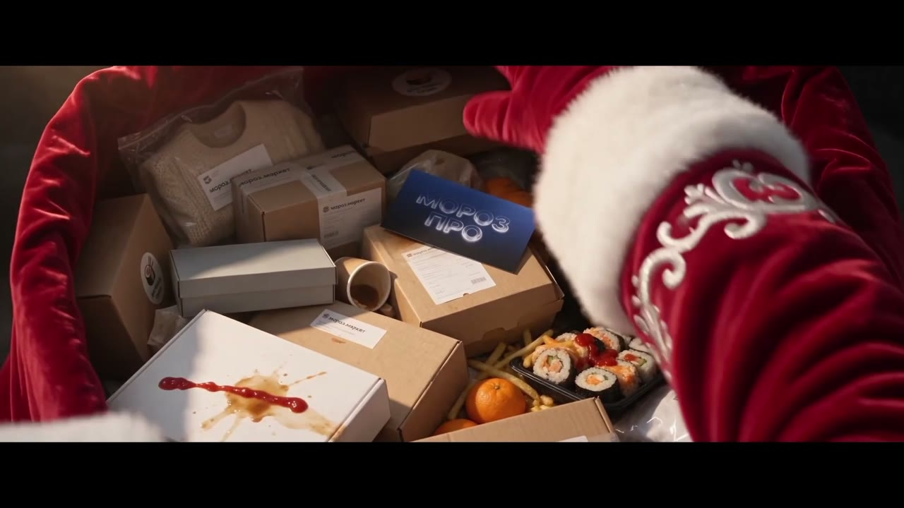
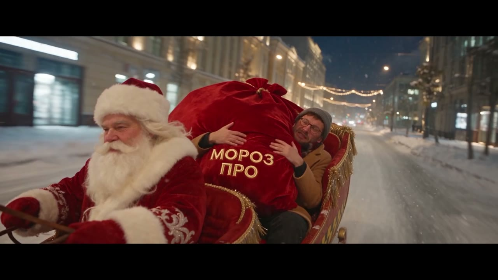
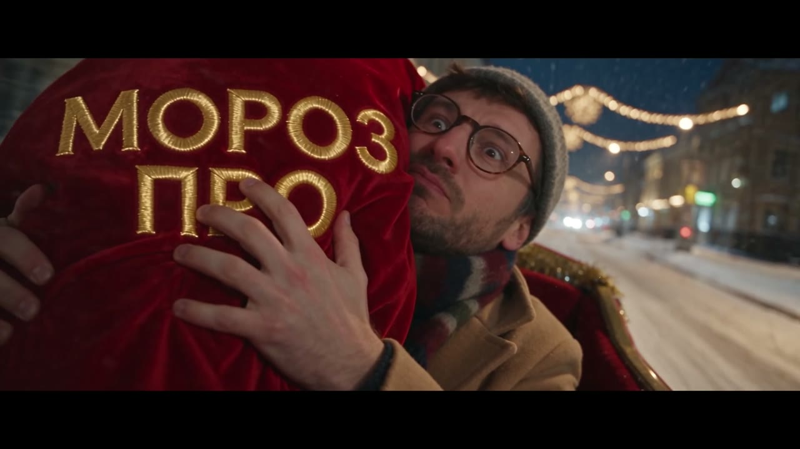
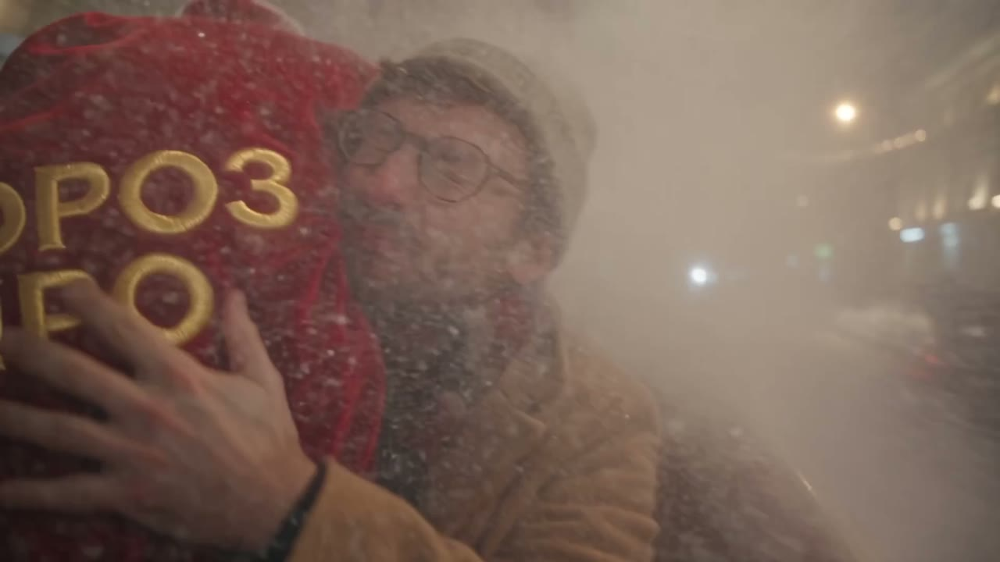
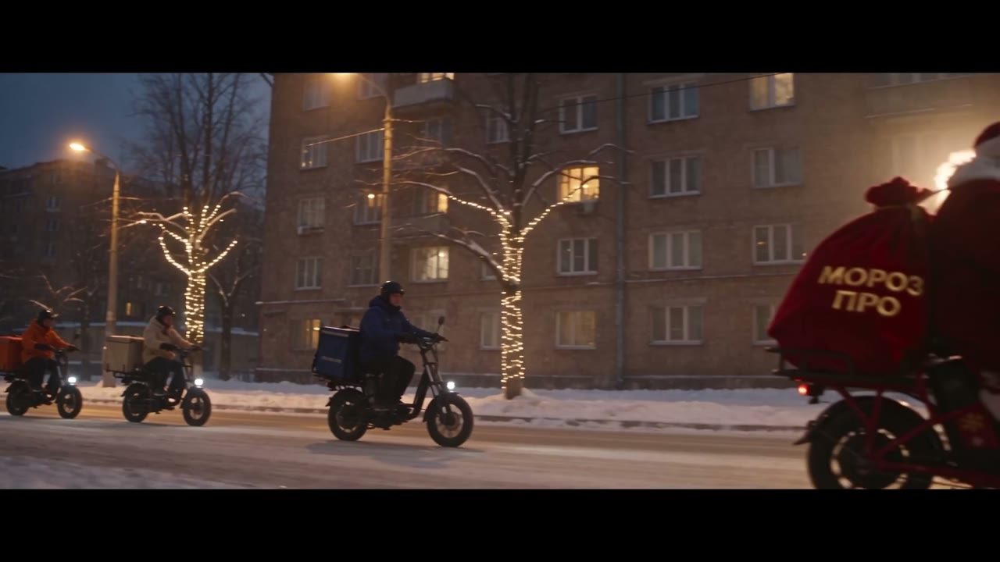
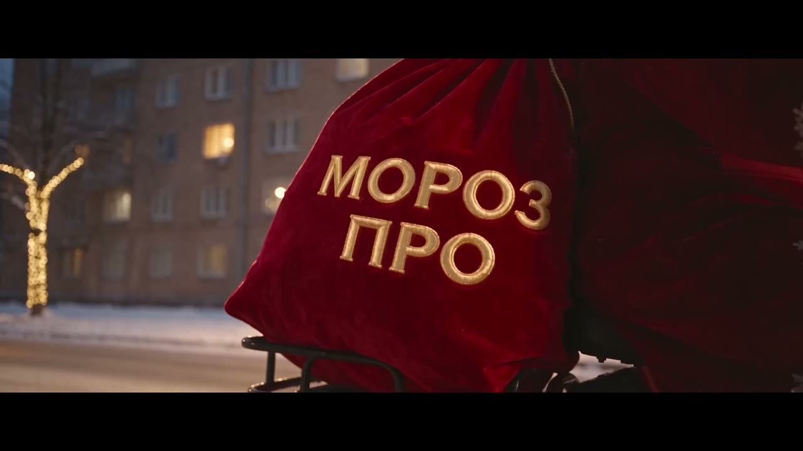
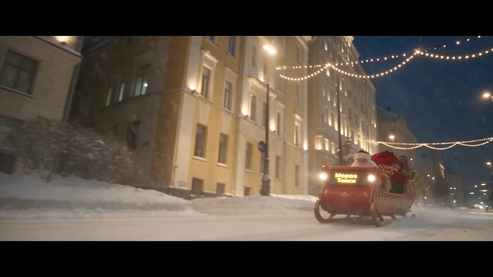
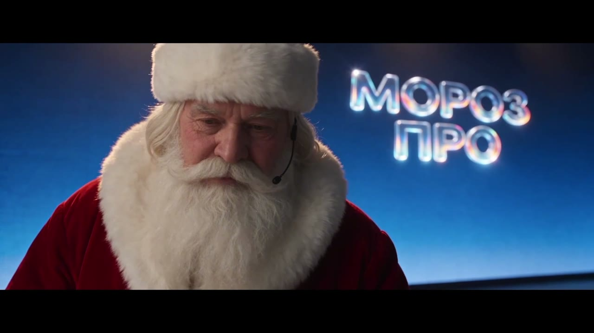
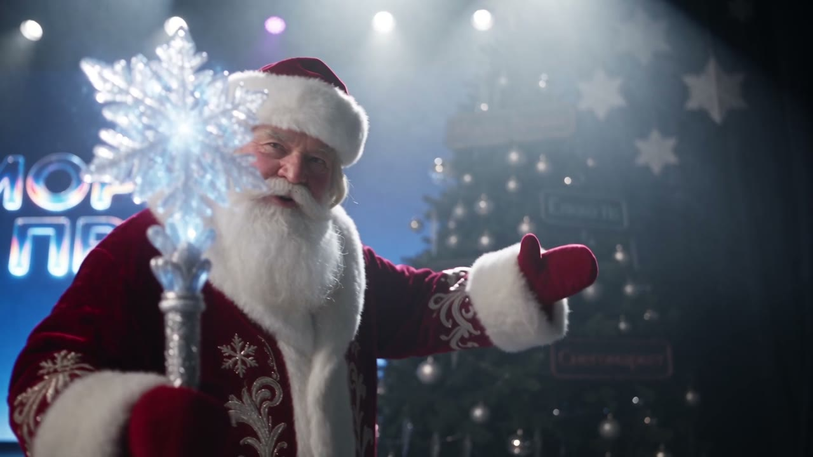
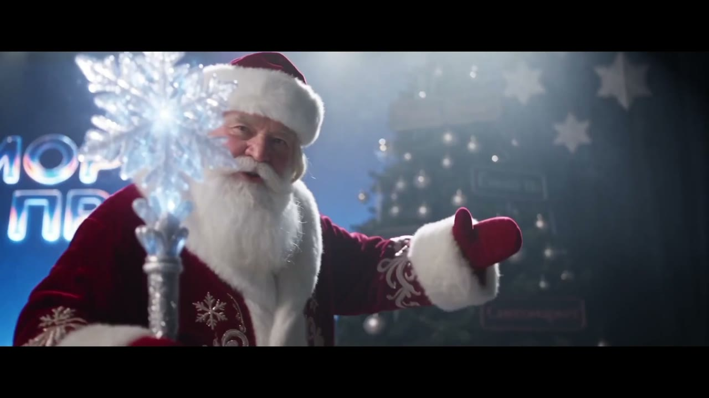

01
Мешок с подарками, визитка
10 с 4,5–6,015 с 5,0–7,520 с 7,0–9,330 с 17,5–20,0
Убрать синюю визитку из мешка целиком. Пустую визитку не оставляем. Остальное содержимое мешка не трогаем.
Собрано 26.11 по чату «Уралсиб х CULT / Новый год» и переписке с Артёмом. Кадры — из текущих монтажей v2511, для 20 — v2611.
Правило клиента. «Мороз ПРО» остаётся титром в начале. С мешков, визиток и всех остальных мест убираем. «Мороз Такси» и продукты на ёлке оставляем.
Решение Кости 25–26.11. Фон за Дедом с «МОРОЗ ПРО» на экране не трогаем нигде, ни на крупном плане, ни у ёлки в 30. Визитку из мешка убираем целиком. Мешки перегенерируем без надписи. Плюс кони: первый кадр с такси, где сани едут сами, перегенерируем с упряжкой (шот 07).
Источники: голосовое Вероники 25.11 13:22 (1238), «“Мороз ПРО” чистим везде» 25.11 17:35 (1298), Рома: «начать вносить комментарии по перегенерации мешков, визитной карточки» 25.11 17:34 (1296). Денис 25.11 17:23: правки делаем в рамках бюджета (1292).
| Ролик | Шоты | Приоритет |
|---|---|---|
| 15 с | 01 визитка | Высокий: основная версия, кроме «Мороз ПРО» не трогаем |
| 20 с | 01 визитка | Высокий: перемонтаж ближе к 15 уже собран |
| 10 с | 01 визитка | Низкий: текущую 10 заменяет новая имиджевая из медиафасадов |
| 30 с | 01–06 и 07 кони | Низкий из-за размещения, но «Мороз ПРО» чистим и здесь |
Шот 01 общий для всех версий: перегенерировали один раз — заменили в четырёх монтажах.

Убрать синюю визитку из мешка целиком. Пустую визитку не оставляем. Остальное содержимое мешка не трогаем.

Мешок без надписи «МОРОЗ ПРО».

Мешок без надписи, крупная золотая надпись по центру кадра.

Мешок без надписи.

Мешок без надписи. Надпись мелкая, у правого края.

Мешок без надписи.

Перегенерировать с конями: сейчас сани едут по улице сами, коней нет. Запрячь коней, всё остальное как в текущем шоте: жёлтое такси проносится мимо, снежная пыль, улица, гирлянды, табличка «Мороз Такси».

Фон с «МОРОЗ ПРО» за Дедом не трогаем, шот остаётся как есть. Решение Кости 25.11.

Фон за Дедом не трогаем и здесь, шот остаётся как есть. Решение Кости 26.11: фон за Дедом не трогаем нигде.

«Мороз ПРО» на экране слева — это и есть титр в начале. Не трогаем.